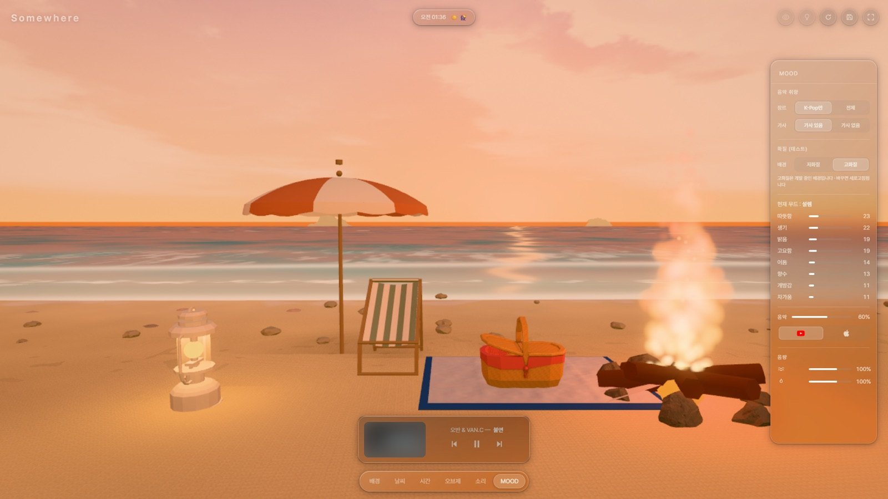
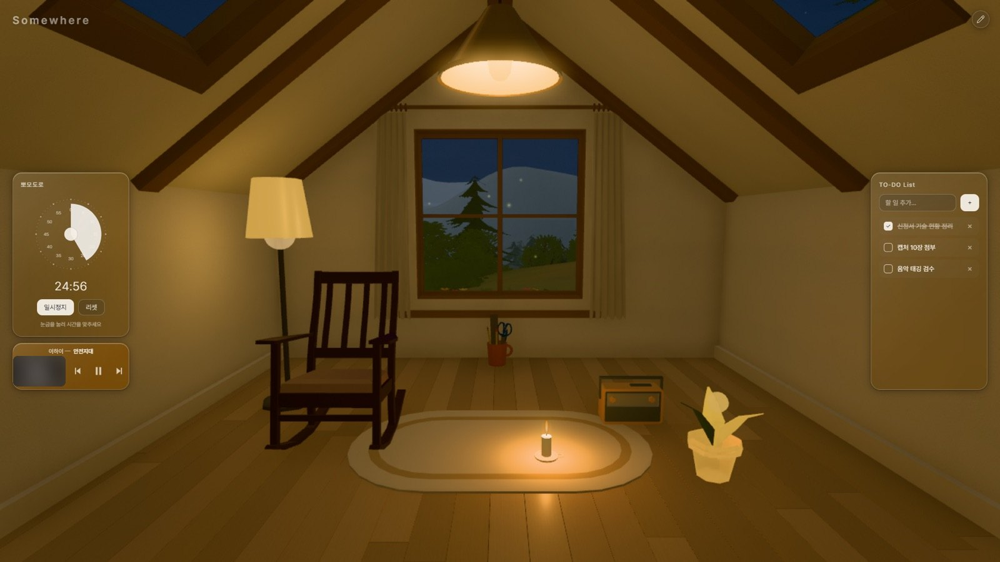
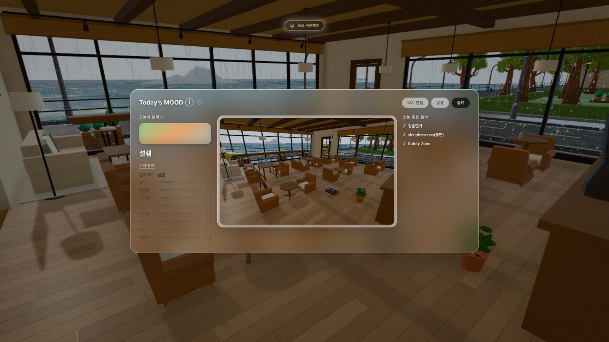

만든 이유.
공부나 작업을 시작하기 전에 음악부터 찾느라 시간을 쓰곤 했습니다. 막상 틀어도 그때 기분과 맞지 않아서 계속 넘기게 됩니다. 기분을 검색어로 옮기기는 어렵지만, 머물고 싶은 공간으로는 만들 수 있다고 생각했습니다.
그래서 Somewhere에서는 음악을 검색하지 않습니다. 공간을 바꾸면 분위기가 바뀌고, 분위기에 맞춰 음악이 바뀝니다. 점수를 매기지 않고 감정을 묻지도 않습니다. 켜 두는 동안 신경 쓸 일이 없는 것을 가장 먼저 정했습니다.
음악을 고르는 방식.
촛불, 담요, 비, 노을, 바람처럼 공간 안의 요소마다 아홉 가지 감정 점수가 있습니다. 직접 만든 엔진(MMM, Mood Makes Music)이 지금 공간에 있는 요소의 점수를 더해 분위기를 정합니다. "포근한 추억", "적막함", "해방감" 같은 이름입니다.
곡 2,293개에도 같은 아홉 가지 점수를 매겨 두었습니다. 공간의 점수와 가까운 곡들 가운데 하나를 고르고(코사인 유사도, 가중 추첨, 최근 곡 반복 방지), 곡이 바뀔 때도 음악이 끊기지 않게 이어 붙입니다.
공간은 다락방, 캠핑장, 도시 옥상, 바닷가, 카페 다섯 곳이고, 시간과 날씨, 계절, 바람을 바꿀 수 있습니다. 실제 날씨를 따라가게 할 수도 있습니다. 음악은 유튜브나 애플 뮤직으로 틀거나, 분위기에 맞춰 그 자리에서 작곡하는 로파이 엔진으로 듣습니다. 그 밖에 집중 모드, 공간 저장과 회고 카드, 친구와 같은 공간에 있기, 5개 언어가 있습니다.



만들면서 정한 것.
새 요소는 오브젝트 하나로
전등, 바람, 커튼, 음료, 계절처럼 넣고 싶은 요소가 계속 늘었습니다. 요소마다 엔진에 예외를 만들면 곧 손댈 수 없게 될 것 같아서, 엔진은 화면과 상관없는 판정 로직으로 떼어 내고 새 요소는 감정 점수를 가진 오브젝트 하나로만 추가하게 했습니다. 지금 80개가 넘는 물건과 환경 요소가 엔진을 고치지 않고 들어와 있습니다.
오래 켜 둬도 거슬리지 않게
켜 두고 작업하는 앱이라 화면이 멈칫하거나 번쩍이면 바로 거슬립니다. 번개 효과를 영상으로 재 보니 2분에 8번, 밝기가 최대 2.3배까지 튀었습니다. 지금은 12–30초에 한 번, 노출이 34% 넘게 오르지 않게 천천히 차오릅니다. 가을 낙엽 6,000장을 까는 것처럼 무거운 작업은 여러 프레임에 나눠 처리합니다.
아바타가 의자나 침대에 앉을 때 닿을 면을 찾는 검사는 근처 물체만 추려서 하게 해서 43 ms에서 1.1 ms로 줄였습니다. 누울 때마다 1.3초씩 멈추던 문제가 이때 없어졌습니다.
같이 있기
친구를 초대해 같은 공간에 있는 기능을 넣고 싶었지만, 서버를 늘 켜 둘 비용은 없었습니다. Cloudflare Workers와 Durable Objects로 방 서버를 만들고, 조용할 때는 잠드는 WebSocket을 써서 접속을 유지하는 것만으로는 비용이 나가지 않게 했습니다. 정식 코드와 떨어진 실험 폴더에서 먼저 확인한 뒤 옮겼습니다.
베타 테스트.
2026년 9월 18일 베타 0.2부터 지금의 0.8.4까지 32번 배포했고, 버전마다 테스터에게 패치노트를 보냈습니다. 새 기능 묶음은 0.x, 체감되는 버그 수정은 0.x.y로 올리고, 자잘한 수정은 다음 패치노트의 '기타'에 모읍니다.
한 테스터가 다락방에서 공부 모드에 들어가면 놓지도 않은 창가 자리에 앉는다고 알려 줬습니다. 꺼 둔 좌석인지 확인하지 않는 코드가 원인이었고, 고쳐서 다음 버전에 넣었습니다.
다음.
같은 웹 코드를 Capacitor로 감싸 iOS 앱을 만들고 있습니다. 음악은 애플 MusicKit으로 연결하고, 휴대폰에서는 왼쪽 조이스틱으로 걷고 두 손가락으로 시점을 바꿉니다. 화면 광고는 넣지 않습니다.
만드는 과정은 블로그에 적고 있습니다.
화면 속 3D 모델 가운데 일부는 Creative Commons Attribution(CC BY) 라이선스로 제공된 저작물이며, Somewhere에서 크기 조정·색상 변경·재질 수정 등의 변경을 가해 사용했습니다. 각 저작물의 권리는 원저작자에게 있습니다. 앱에서는 회고 화면의 ⓒ 버튼에서 같은 목록을 볼 수 있습니다.
플레이어에 보이는 영상 썸네일은 흐리게 처리했습니다.
3D 모델 출처
- projector screen by Jonathan Granskog — CC BY via Poly Pizza
- Projector by Andy Shaw — CC BY via Poly Pizza
- Lantern by Alex Safayan — CC BY via Poly Pizza
- Chair by CMHT Oculus — CC BY via Poly Pizza
- Plant - White Pot by Jakers_H — CC BY via Poly Pizza
- Lamp post by Poly by Google — CC BY via Poly Pizza
- Green Tea Set (Matcha) by Bruno Oliveira — CC BY via Poly Pizza
- red lantern by Sophie Kim — CC BY via Poly Pizza
- Orchid by Poly by Google — CC BY via Poly Pizza
- Cushions by Poly by Google — CC BY via Poly Pizza
- Tree Trunk by Esdras Paravizo — CC BY via Poly Pizza
- Espresso pot by Poly by Google — CC BY via Poly Pizza
- Coffee Machine by J-Toastie — CC BY 3.0 via Poly Pizza
- Coffee Machine by J-Toastie — CC BY 3.0 via Poly Pizza
- Slice of Cake by Jarlan Perez — CC BY via Poly Pizza
- Side table by Darwin Yamamoto — CC BY via Poly Pizza
- Record player by Poly by Google — CC BY via Poly Pizza
- Coffee plant by Poly by Google — CC BY via Poly Pizza
- Boat by Poly by Google — CC BY via Poly Pizza
- Red/White Beach Umbrella by S. Paul Michael — CC BY via Poly Pizza
- Clouds by Jarlan Perez — CC BY via Poly Pizza
- Log by Poly by Google — CC BY via Poly Pizza
- Beach chair by Poly by Google — CC BY via Poly Pizza
- Picnic Basket by Poly by Google — CC BY via Poly Pizza
- Grass #2 by Tomáš Bayer — CC BY via Poly Pizza
- Blankets by Poly by Google — CC BY via Poly Pizza
- T-shirt by Poly by Google — CC BY 3.0 via Poly Pizza
- Clothes hanger by Poly by Google — CC BY 3.0 via Poly Pizza
- Club Arm Chair by Zsky — CC BY 3.0 via Poly Pizza
- 1994 Nissan 180MX by Grzybek — CC BY 3.0 via Poly Pizza
- 1972 Bursley Defiance by Grzybek — CC BY 3.0 via Poly Pizza
- Airplane by jeremy — CC BY via Poly Pizza
- Tree by Zsky — CC BY 3.0 via Poly Pizza
- Chair by Aren Anderton — CC BY 3.0 via Poly Pizza
- Chair by CMHT Oculus — CC BY 3.0 via Poly Pizza
- Barbecue Grill by Jason Toff — CC BY 3.0 via Poly Pizza
- Folding Table by S. Paul Michael — CC BY 3.0 via Poly Pizza
- Hammock by Poly by Google — CC BY 3.0 via Poly Pizza
- Fishing Pole by Shawn Westphal — CC BY 3.0 via Poly Pizza
- Bean Bag by J-Toastie — CC BY 3.0 via Poly Pizza
- Tree by Quaternius — CC BY 3.0 via Poly Pizza
- Tree by Quaternius — CC BY 3.0 via Poly Pizza
- Pine by Quaternius — CC BY 3.0 via Poly Pizza
- Bucket of Fish by Quaternius — CC BY 3.0 via Poly Pizza